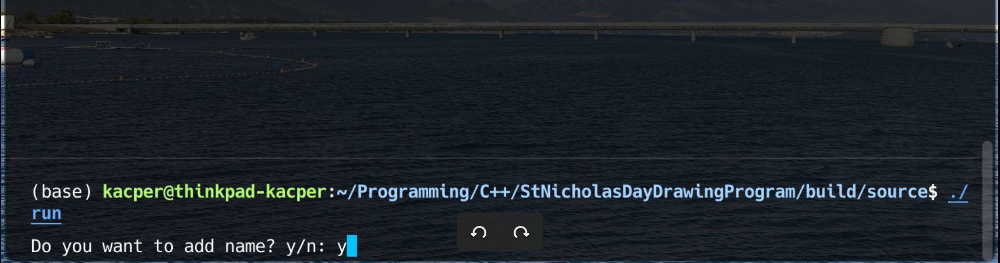
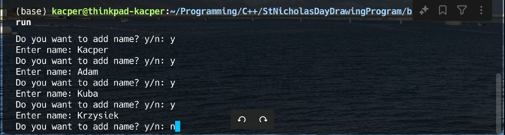
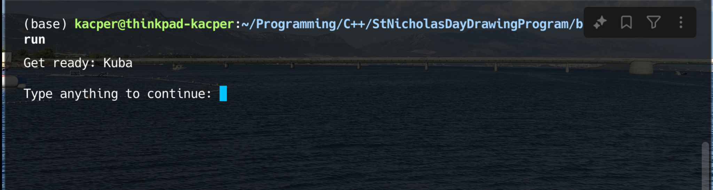
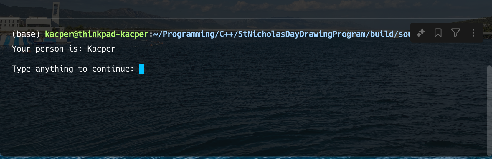
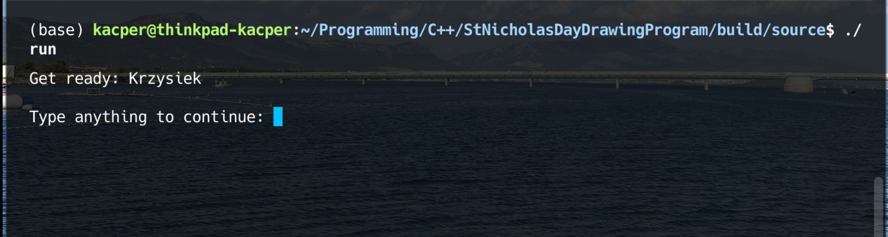

St Nicholas Day Drawing Program
github
Opis projektu:
St. Nicholas Day Drawing Program to aplikacja konsolowa w języku C++,
stworzona do losowego przydzielania uczestników do obdarowywania się
prezentami. Projekt powstał z myślą o tradycji wymiany prezentów podczas
Mikołajek, ale może być również używany podczas Świąt Bożego Narodzenia
i innych podobnych okazji. Program oferuje prosty, interaktywny sposób
przeprowadzenia losowania, zapewniając element niespodzianki oraz
ułatwiając organizację wymiany prezentów.
Funkcje aplikacji:
- Dodawanie uczestników: Użytkownik może wprowadzać imiona uczestników,
a program sprawdza, czy liczba osób jest wystarczająca do przeprowadzenia
losowania.
- Losowe przydzielanie par: Program losowo dobiera osoby, które mają sobie
wręczyć prezent, unikając przypisania osoby samej sobie.
- Interaktywne losowanie: Każdy uczestnik podchodzi do komputera i w tajemnicy
poznaje osobę, którą wylosował.
- Losowy porządek prezentacji: Kolejność losowania i wyświetlania wyników jest
losowa, co zwiększa element niespodzianki.
Technologie użyte w projekcie:
- C++ — język programowania użyty do stworzenia aplikacji.
- Biblioteki standardowe: iostream, vector, cstdlib, ctime.
- Organizacja kodu z wykorzystaniem plików nagłówkowych i modularnego
podejścia.
Zdjęcia:




